R.version.string[1] "R version 4.4.2 (2024-10-31 ucrt)"sessionInfo()$running[1] "Windows 10 x64 (build 19045)"RM01_Labs/
├── data/ # Raw datasets and imports
├── scripts/ # Your R code files
├── outputs/ # Generated plots, tables, reports
├── certificates/ # Professional development documentation
└── reflections/ # Written responses to critical questionsAfter downloading and installing open RStudio, we will cover now some tutorials.
👨💻 Long Tutorial
We would cover a brief introduction on this labs, students would like to cover a longer tutorial to get use to R quickly. Click on this link: https://cran.r-project.org/doc/manuals/r-release/R-intro.pdf
You need to have installed R and RStudio to continue with this lab.


#.) On the script panel, type the caracter # and then write 'LAB ONE AND TODAY'S DATE'. R will ignore any line of command starting with #. You can use # to add comments, titles, reminders within your R code/ R Script.
Your R Script shall look like this:
The Rstudio screen has four windows or panels: 1. Console. 2. Environment and history. 3. Files, plots, packages and help. 4. The R script(s) and data view. The R script is where you keep a record of your work or commands - in a line by line basis.
getwd() in line number ‘2’ and hit the keys ‘ctrl+enter’ in your keyboard (The + indicates ‘do it at the same time’), you dont need to press the key ‘+’. After ‘running’ line 2, you will see in the console panel the working directory (or folder) that R is using to download and upload files.
Choose your course file folder 📁. Recall we called the working folder folder ‘RM01_Labs’. Afterwards, in RStudio’ go to ‘Session’, ‘Set Working Directory’, ‘Choose Directory’, and select this folder.

The ‘Console’ panel renders setwd(and a path/directory to your chosen folder in your computer).


In your script, run: 5 * 5 (result should be 25 in the Console).
Create a small matrix and run it:
5*5
A <- matrix(1:8, nrow = 4, ncol = 2)
A
The outcome in the console shall be as follows:


View(A) in line 7 and hit the keys ‘ctrl+enter’ to run line 7, this will send you to a different tab. Afterwards, click on your R script tab.
The tab ‘Packages’ shows the list of add-ons included in the installation of RStudio. If checked, the package is loaded into R, if not, any command related to that package won’t work, you will need select it. You can also install other add-ons by clicking on the ‘Install Packages’ icon.
Another way to install add-ons is to type the function install.packages("name of the package"), and then you will be able to open the library of commands of that package.
install.packages(“forecast”) and hit ctrl+enter. If a window opens, you can hit yes to restart RStudio. See the picture below, make sure you do not get errors in the console. The sign ‘>’ will show when R finishes running a line.
You must activate the package by typing ‘library(the package)’, for example, library(forecast) and ctrl+enter. This will activate all functions within the ‘forecast’ package.
library(forecast)

The package forecast is activated to analyse and predict time series (e.g. yearly house prices during the last 20 years).
Script/Data View Window:
• Begin scripts with a comment for title and description using the hash character (#). Anything after the hash on the same line is considered a comment and is ignored by R. • Code can continue to the next line without a special character, but only if the previous line ends in a way that suggests continuation (e.g., a comma or unclosed brackets). • To run a line of code, position the cursor on the line and press Ctrl+Enter. For multiple lines, select them and press Ctrl+Enter.
Console/Output Window:
• It’s recommended to work in script mode for reusability. • Commands outside the script context can be typed at the bottom of the console, indicated by the “>” sign. • Press Enter to execute a command. • Use the up and down arrows to revisit and edit older lines of code previously typed into the console.
File → Save (e.g., lab1_quickstart.R) into your course folder. 
End of Lab 1
Professional certifications complement academic learning by providing industry-recognised credentials. For land economy graduates leading industries and entering consultancy, government, or research roles, demonstrating quantitative competency through multiple channels strengthens your professional profile and evidences commitment to continuous learning.
By the end of this lab you will be able to:
Establish access to University-provided LinkedIn Learning resources.
💭 Reflect: Write bulletpoints that cover:
Short beginner certificates often take only a few hours. Pick one you can finish this week.
💭 Reflect: a) Provide a certificate/enrolment URL or a screenshot proving enrolment. What challenges do you anticipate in acquiring programming skills alongside your substantive coursework? b) List three new R commands and three packages you learned and one common error you corrected.
Run the following lines in RStudio to ensure you’re ready for the following Labs.
Recall you can run lines of code in R by hitting the keys ctrl+enter (commad+enter for Mac)
R.version.string[1] "R version 4.4.2 (2024-10-31 ucrt)"sessionInfo()$running[1] "Windows 10 x64 (build 19045)"Install key packages (run once):
install.packages(c("learnr", "r4ds.tutorials", "readr", "readxl", "ggplot2"))Verify they load and basic plotting works:
library(ggplot2)Warning: package 'ggplot2' was built under R version 4.4.3df <- data.frame(x = 1:10, y = (1:10)^0.5)
plot(df$x, df$y, type = "l", main = "Tech check: base plot", xlab = "x", ylab = "sqrt(x)")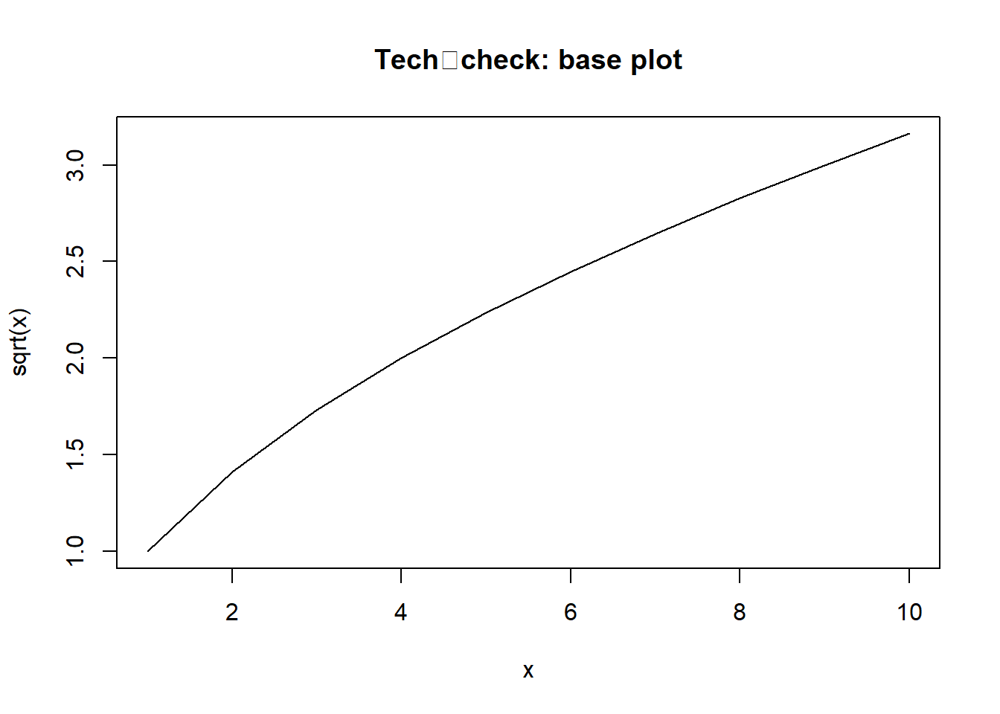
# Test basic plotting capability
library(ggplot2)
test_data <- data.frame(
year = 2010:2020,
house_prices = c(250000, 260000, 275000, 285000, 290000,
310000, 325000, 340000, 355000, 370000, 385000)
)
ggplot(test_data, aes(x = year, y = house_prices)) +
geom_line(colour = "steelblue", linewidth = 1.2) +
geom_point(colour = "darkred", size = 2) +
scale_y_continuous(labels = scales::comma_format()) +
labs(
title = "Hypothetical House Price Trends",
subtitle = "System functionality test",
x = "Year",
y = "Average House Price (£)",
caption = "Test data for R/RStudio verification"
) +
theme_minimal()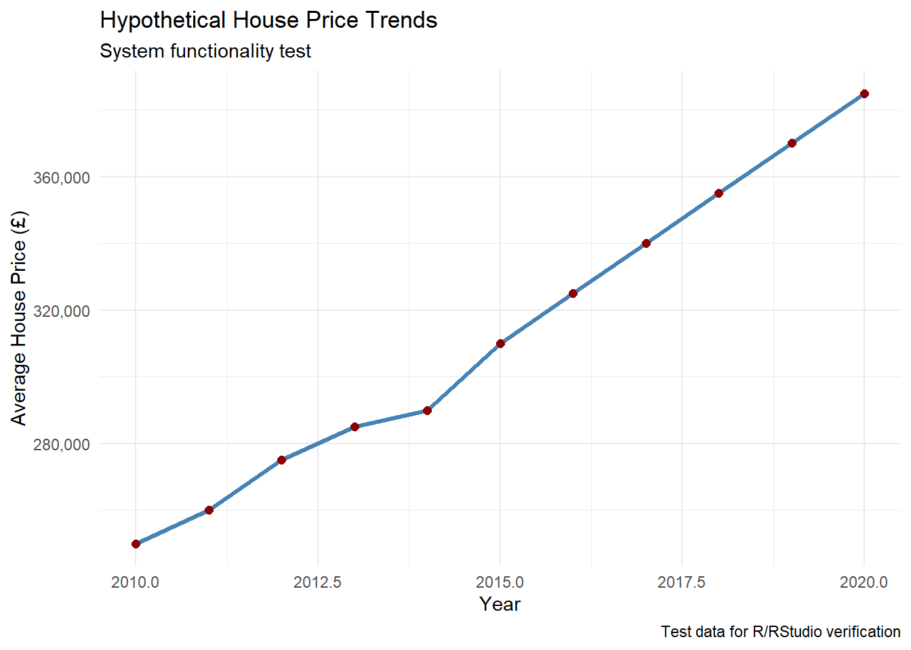
💭 Reflect: Did everything install and run without warnings? Capture any errors so we can fix them in class.
End of Lab 2
This lab exposes you to different pedagogical approaches in quantitative methods education while building the practical skills necessary for data-driven research in land economy.
By the end of this lab you will be able to:
install.packages(c("learnr", "r4ds.tutorials", "swirl"))If tutorials don’t appear in RStudio’s Tutorial tab after installation, restart R.
This runs as an interactive tutorial in RStudio’s Tutorial pane.
# Option 1: via code
learnr::run_tutorial("01-data-visualization", package = "r4ds.tutorials")
# Option 2: discover tutorials installed on your system
learnr::available_tutorials("r4ds.tutorials")Do this: 1. Start and complete the tutorial. Use the Show in New Window icon if the pane is small. 2. When you reach the Submit page, follow its instructions (we won’t collect submissions in this lab, just finish to the end).
💭 Reflect: - What’s the difference between aesthetics (e.g., aes(x, y, color)) and geoms (e.g., geom_point(), geom_line())? - Name two plot improvements you used (labels, theme, scales, facets).
This is a short core tutorial bundled with learnr.
learnr::run_tutorial("ex-data-basics", package = "learnr")Do this: 1. Complete all exercises; click Run and Submit Answer for each. 2. If you get stuck, open the Hint dropdowns.
💭 Reflect: - Which data types/structures did you manipulate (vectors, data frames)? - One mistake you made and how the tutorial feedback helped you fix it.
swirl runs entirely in the Console and saves your progress.
# Install/run swirl
install.packages("swirl")
library(swirl)
# Start swirl
swirl()
# (enter your name when prompted)
# Install and start a course (first time only)
install_from_swirl("R Programming") # or "R_Programming"
# At any time, leave swirl with
# bye()
# Check progress later
swirl::progress()Do this: - Install R Programming and complete the first lesson. - Exit with bye() and verify progress with swirl::progress().
💭 Reflect: - How does working in the Console (swirl) feel compared with the GUI tutorials? - Which mode gave you clearer feedback on wrong answers?
Create a tiny vector and compute a statistic, then plot a quick line:
x <- 1:10
mean_x <- mean(x)
mean_x[1] 5.5plot(x, type = "l", main = "Quick line", ylab = "x")
abline(h = mean_x, lty = 2)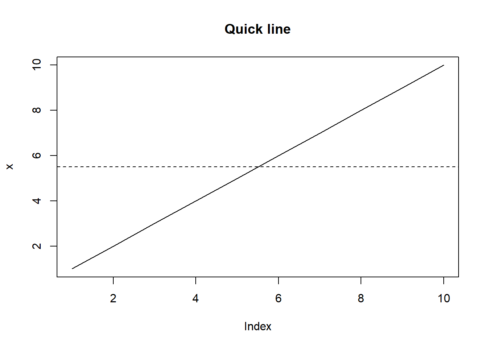
💭 Reflect: - Which approach (r4ds.tutorials, learnr, swirl) best prepared you to write and run this code independently?
learnr::available_tutorials().labs(), scale_*_continuous(), theme_minimal(), and facet_wrap().<-. Hints/feedback indicate expected objects or function names.swirl::progress(); exit with bye().End of Lab 3
By the end of this lab you will be able to: 1. Download the ONS Price Index of Private Rents (PIPR) monthly workbook and save it in a tidy project structure. 2. Import Excel (.xlsx/.xls) and CSV files using RStudio’s Import Dataset UI and reproducible R code. 3. Deal with metadata/header rows via skip, set col_names, and verify column types. 4. Plot time series (index and annual % change) with base R and add reference lines. 5. Use help pages (e.g., ?plot) and annotate charts for a policy audience.
Rcoding/) with subfolder data/.# install.packages(c("readxl", "readr"))💡 Tip: Prefer file names without spaces and lower-cases, e.g.
pipr_monthly.xlsrather thanpipr monthly.xls.
Go to ONS.gov.uk and search Price Index of Private Rents (PIPR). This lab is using ONS data on Figure 4: Rent annual inflation slowed across the UK, Private rents annual inflation, across the UK, January 2016 to August 2025.
On the dataset page, choose Data → Download monthly workbook (Excel) or CSV if available.
Save as data/pipr_monthly.xls inside your project folder (e.g., Rcoding/) with subfolder data/.
(Optional) Open the file and identify the sheet that contains the UK and country/regions.
💭 Reflect: Why does PIPR (rents) provide a more direct lens on housing affordability and regional pressures than GDP for planning and regeneration?
Use readxl::read_excel() and inspect column names to choose the UK series.
library(readxl)
# Adjust 'sheet' and 'skip' depending on the workbook structure you download.
# we use skip = 7 because there are headings in the first 7 rows of the dataset.
pipr_raw <- read_excel("data/pipr_monthly.xls", sheet = 1, skip = 7)
# Inspect names to locate the date/month, UK Index, and UK annual % change columns
names(pipr_raw)[1] "Date" "UK" "England" "Wales"
[5] "Scotland" "Northern Ireland"# let's keep a copy of the raw data intact and create a new version of the data.
pipr<-pipr_raw
# rename column names for easiness.
names(pipr) <- c("month", "uk", "england", "wales", "scotland", "n_ireland")
str(pipr)tibble [116 × 6] (S3: tbl_df/tbl/data.frame)
$ month : POSIXct[1:116], format: "2016-01-01" "2016-02-01" ...
$ uk : num [1:116] 3.3 3.3 3.4 3.3 3.2 3.3 3.4 3.3 3.2 3.3 ...
$ england : num [1:116] 3.5 3.5 3.6 3.5 3.3 3.5 3.7 3.6 3.5 3.6 ...
$ wales : num [1:116] 1.2 0.8 0.8 0.6 0.4 0.3 0.3 0.9 1.4 1.3 ...
$ scotland : num [1:116] 2.1 1.8 1.6 1.5 1.4 1.1 1.2 0.9 1.1 1.1 ...
$ n_ireland: num [1:116] 1.1 1.3 1.4 1.6 1.6 1.6 1.5 1.5 1 0.9 ...head(pipr, 6)# A tibble: 6 × 6
month uk england wales scotland n_ireland
<dttm> <dbl> <dbl> <dbl> <dbl> <dbl>
1 2016-01-01 00:00:00 3.3 3.5 1.2 2.1 1.1
2 2016-02-01 00:00:00 3.3 3.5 0.8 1.8 1.3
3 2016-03-01 00:00:00 3.4 3.6 0.8 1.6 1.4
4 2016-04-01 00:00:00 3.3 3.5 0.6 1.5 1.6
5 2016-05-01 00:00:00 3.2 3.3 0.4 1.4 1.6
6 2016-06-01 00:00:00 3.3 3.5 0.3 1.1 1.6💭 Reflect: Are the three selected columns correct for your workbook version? If not, which names should you use instead?
data/pipr_monthly.xls.pipr and verify column names (e.g., month, uk_index, uk_yoy).Paste the generated code in your script so your workflow is reproducible.
Plot PIPR annual % change for the UK as a line. Label the x‑axis sparsely to keep it readable.
plot(pipr$uk, type = "l",
xlab = "",
ylab = "Private rents — annual % change",
main = "UK private rents (PIPR): annual % change",
xaxt = "n") # suppress default axis)
# Add sparse x-axis labels
labs_every <- 6
at_idx <- seq(1, nrow(pipr), by = labs_every)
axis(1, at = at_idx, labels = pipr$month[at_idx],
las = 2, cex.axis = 0.7) # smaller font for ticks
# Add subtitle (source) directly under the title
title(sub = "Source: ONS - Index of Private Housing Rental Prices (PIPR)",
cex.sub = 0.8, font.sub = 3) # italic, smaller
# Reference line at 2% (inflation target)
abline(h = 2, lty = 2, col = "blue")
# Label it
text(x = min(pipr$month), y = 2, labels = "Inflation target (2%)",
pos = 3, col = "blue", cex = 0.8)
💭 Reflect: Identify periods of fastest rent inflation and periods of slowdown. What policy or macro factors might line up with these shifts?
💭 Reflect: What extra annotations (e.g., policy changes, shocks) would make this plot more useful to a local authority audience?
Option 1: Download the CSV from the PIPR page (if provided) and import with readr::read_csv().
library(readr)
pipr_csv <- read_csv("data/pipr_monthly.csv") # adjust file nameNew names:
Rows: 130 Columns: 9
── Column specification
──────────────────────────────────────────────────────── Delimiter: "," chr
(6): Figure 4: Rent annual inflation slowed across the UK, ...2, ...3, .... lgl
(3): ...7, ...8, ...9
ℹ Use `spec()` to retrieve the full column specification for this data. ℹ
Specify the column types or set `show_col_types = FALSE` to quiet this message.
• `` -> `...2`
• `` -> `...3`
• `` -> `...4`
• `` -> `...5`
• `` -> `...6`
• `` -> `...7`
• `` -> `...8`
• `` -> `...9`names(pipr_csv)[1] "Figure 4: Rent annual inflation slowed across the UK"
[2] "...2"
[3] "...3"
[4] "...4"
[5] "...5"
[6] "...6"
[7] "...7"
[8] "...8"
[9] "...9" head(pipr_csv)# A tibble: 6 × 9
Figure 4: Rent annual inflat…¹ ...2 ...3 ...4 ...5 ...6 ...7 ...8 ...9
<chr> <chr> <chr> <chr> <chr> <chr> <lgl> <lgl> <lgl>
1 Private rents annual inflatio… <NA> <NA> <NA> <NA> <NA> NA NA NA
2 <NA> <NA> <NA> <NA> <NA> <NA> NA NA NA
3 Notes "1. … <NA> <NA> <NA> <NA> NA NA NA
4 Unit "Per… <NA> <NA> <NA> <NA> NA NA NA
5 Source "Pri… <NA> <NA> <NA> <NA> NA NA NA
6 <NA> <NA> <NA> <NA> <NA> <NA> NA NA NA
# ℹ abbreviated name: ¹`Figure 4: Rent annual inflation slowed across the UK`Option 2: If a CSV isn’t provided, save the relevant sheet as CSV from Excel and import it.
# Example: write out the subset you prepared, then re-import it
# write_csv(pipr, "data/pipr_monthly_subset.csv")
pipr_from_csv <- read_csv("data/pipr_monthly.csv")New names:
Rows: 130 Columns: 9
── Column specification
──────────────────────────────────────────────────────── Delimiter: "," chr
(6): Figure 4: Rent annual inflation slowed across the UK, ...2, ...3, .... lgl
(3): ...7, ...8, ...9
ℹ Use `spec()` to retrieve the full column specification for this data. ℹ
Specify the column types or set `show_col_types = FALSE` to quiet this message.
• `` -> `...2`
• `` -> `...3`
• `` -> `...4`
• `` -> `...5`
• `` -> `...6`
• `` -> `...7`
• `` -> `...8`
• `` -> `...9`💭 Reflect: Are types preserved across Excel vs CSV imports? Which route is more reliable/reproducible on your machine?
If your workbook includes regions (England, Wales, Scotland, Northern Ireland), select one annual % change column and plot together with the UK.
# Attempt to find a regional YoY column (edit the pattern or use exact name after checking names())
reg_yoy_col <- grep("England.*Annual|Annual.*England|England.*%", names(pipr_raw), ignore.case = TRUE)[1]
if(!is.na(reg_yoy_col)){
reg_yoy <- suppressWarnings(as.numeric(pipr_raw[[reg_yoy_col]]))
plot(pipr$uk_yoy, type = "l", xlab = "Month", ylab = "Annual % change",
main = "PIPR annual % change: UK vs England")
lines(reg_yoy, lty = 3)
legend("topleft", legend = c("UK", "England"), lty = c(1,3), bty = "n")
} else {
message("No matching regional column automatically detected — inspect names() and set reg_yoy_col manually.")
}No matching regional column automatically detected — inspect names() and set reg_yoy_col manually.💭 Reflect: Does the region move broadly with the UK or diverge materially? What local factors could explain divergence?
Explore ?plot, curve(), and abline().
# ?plot # open during interactive session
curve(sin(x), from = 0, to = 6.28, xlab = "x", ylab = "y = sin(x)")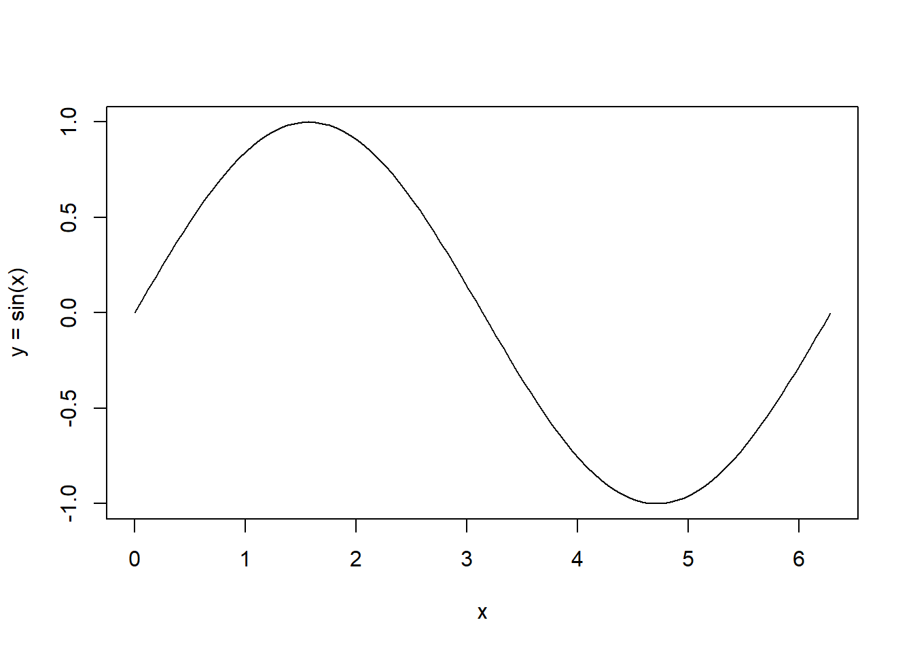
plot(1:10, type = "n", xlab = "x", ylab = "y")
abline(h = 0, v = 5, lty = 2)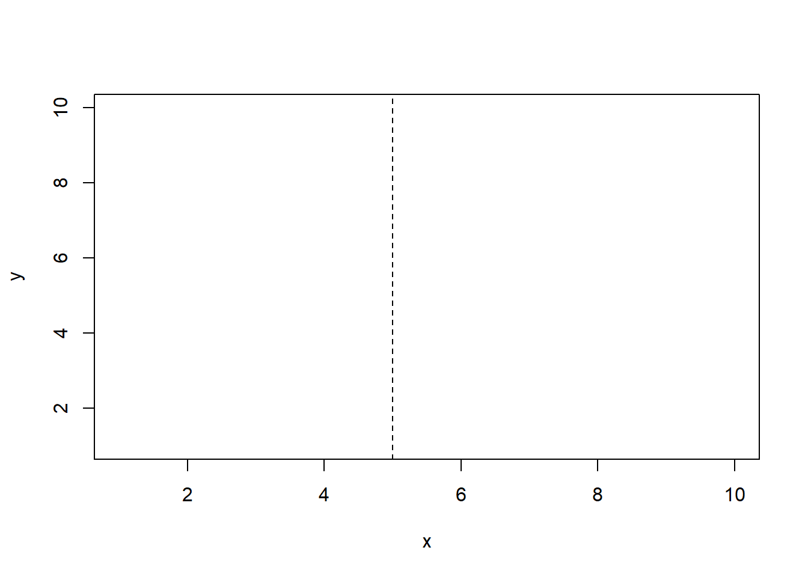
💭 Reflect: Which plot() arguments improved readability most (e.g., las, xaxt, lwd, xlim)?
You can also explore textbook datasets with PoEdata for practice with scatter plots and abline(lm()).
#install.packages(c("remotes", "pkgbuild")) # helper packages
#pkgbuild::has_build_tools(debug = TRUE) # should say TRUE on Windows
#remotes::install_github("ccolonescu/PoEdata")
library(PoEdata)
data("andy")
head(andy) sales price advert
1 73.2 5.69 1.3
2 71.8 6.49 2.9
3 62.4 5.63 0.8
4 67.4 6.22 0.7
5 89.3 5.02 1.5
6 70.3 6.41 1.3💭 Reflect: Which numeric pairs in andy would make a sensible policy-relevant scatter (e.g., income vs expenditure)?
data/ subfolder; avoid spaces; use forward slashes.str(), summary(), anyNA(); coerce explicitly when needed.pipr_monthly_2025-09-19.xlsx).?read_excel, ?read_csv, ?plot, ?abline, ?curveIndicative answers; specifics depend on your workbook version and the columns you select.
Part A — PIPR directly tracks private rents, aligning with housing affordability, regional pressures, and regeneration aims; GDP is broader and less targeted.
Part B — Correct columns usually include a date/month field plus UK Index and UK annual % change. Adjust sheet/skip and pick exact names after inspecting names().
Part C — Pasting the generated code ensures others (and future you) can reproduce the import without the UI.
Part D — Rent inflation tends to cluster in waves; periods of rapid increases are visible as peaks, slowdowns as troughs. Index-by-month labelling clarifies timing.
Part E — Add a zero line; annotate notable policy changes or shocks; consider shading for periods of sustained acceleration.
Part F — CSV imports avoid Excel formatting quirks but require careful type checks. Both routes can be reproducible if code-driven.
Part G — Regions often co-move with the UK but can diverge due to local supply constraints, policy differences, or demand shocks.
Part H — Useful plot() args: las (label orientation), xaxt/yaxt (axis toggles), lwd (line width), xlab/ylab (clear labels), xlim/ylim (focus range).
Part I — Any sensible numeric pair (e.g., household income vs spending) supports regression line illustrations with abline(lm(y ~ x, data = andy)).
End of Lab 4
Adapted from: A Guide to Data Visualisation in R for Beginners
Link to files: course folder
By the end of this lab you will be able to: 1. Explore the state.x77 dataset in R. 2. Generate basic descriptive statistics. 3. Create simple plots using base R graphics. 4. Add labels, titles, and colours to plots. 5. Compare different chart types (scatter, bar, histogram, boxplot). 6. Use multi-panel displays to visualise multiple plots at once.
ggplot2 for comparison).library(datasets)
data("state.x77")Warning in data("state.x77"): data set 'state.x77' not foundstate_data <- as.data.frame(state.x77)💭 Reflect: What variables are present in state.x77? Which relate most to planning and regeneration?
str(state_data)'data.frame': 50 obs. of 8 variables:
$ Population: num 3615 365 2212 2110 21198 ...
$ Income : num 3624 6315 4530 3378 5114 ...
$ Illiteracy: num 2.1 1.5 1.8 1.9 1.1 0.7 1.1 0.9 1.3 2 ...
$ Life Exp : num 69 69.3 70.5 70.7 71.7 ...
$ Murder : num 15.1 11.3 7.8 10.1 10.3 6.8 3.1 6.2 10.7 13.9 ...
$ HS Grad : num 41.3 66.7 58.1 39.9 62.6 63.9 56 54.6 52.6 40.6 ...
$ Frost : num 20 152 15 65 20 166 139 103 11 60 ...
$ Area : num 50708 566432 113417 51945 156361 ...💭 Reflect: How many states (rows) and variables (columns) are there? Which are continuous, and which categorical (if any)?
head(state_data, 7) Population Income Illiteracy Life Exp Murder HS Grad Frost Area
Alabama 3615 3624 2.1 69.05 15.1 41.3 20 50708
Alaska 365 6315 1.5 69.31 11.3 66.7 152 566432
Arizona 2212 4530 1.8 70.55 7.8 58.1 15 113417
Arkansas 2110 3378 1.9 70.66 10.1 39.9 65 51945
California 21198 5114 1.1 71.71 10.3 62.6 20 156361
Colorado 2541 4884 0.7 72.06 6.8 63.9 166 103766
Connecticut 3100 5348 1.1 72.48 3.1 56.0 139 4862tail(state_data, 5) Population Income Illiteracy Life Exp Murder HS Grad Frost Area
Virginia 4981 4701 1.4 70.08 9.5 47.8 85 39780
Washington 3559 4864 0.6 71.72 4.3 63.5 32 66570
West Virginia 1799 3617 1.4 69.48 6.7 41.6 100 24070
Wisconsin 4589 4468 0.7 72.48 3.0 54.5 149 54464
Wyoming 376 4566 0.6 70.29 6.9 62.9 173 97203💭 Reflect: What differences do you see between the early and later rows?
summary(state_data) Population Income Illiteracy Life Exp
Min. : 365 Min. :3098 Min. :0.500 Min. :67.96
1st Qu.: 1080 1st Qu.:3993 1st Qu.:0.625 1st Qu.:70.12
Median : 2838 Median :4519 Median :0.950 Median :70.67
Mean : 4246 Mean :4436 Mean :1.170 Mean :70.88
3rd Qu.: 4968 3rd Qu.:4814 3rd Qu.:1.575 3rd Qu.:71.89
Max. :21198 Max. :6315 Max. :2.800 Max. :73.60
Murder HS Grad Frost Area
Min. : 1.400 Min. :37.80 Min. : 0.00 Min. : 1049
1st Qu.: 4.350 1st Qu.:48.05 1st Qu.: 66.25 1st Qu.: 36985
Median : 6.850 Median :53.25 Median :114.50 Median : 54277
Mean : 7.378 Mean :53.11 Mean :104.46 Mean : 70736
3rd Qu.:10.675 3rd Qu.:59.15 3rd Qu.:139.75 3rd Qu.: 81163
Max. :15.100 Max. :67.30 Max. :188.00 Max. :566432 💭 Reflect: Which socio-economic indicators show the widest spread?
library(help = "graphics")💭 Reflect: From the help index, which plotting functions could be useful for socio-economic indicators?
plot(state_data$Population)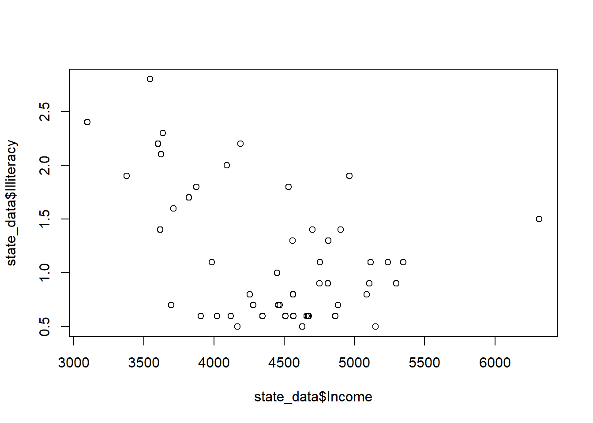
💭 Reflect: What does this reveal about the distribution of state populations?
plot(state_data$Income, state_data$Illiteracy)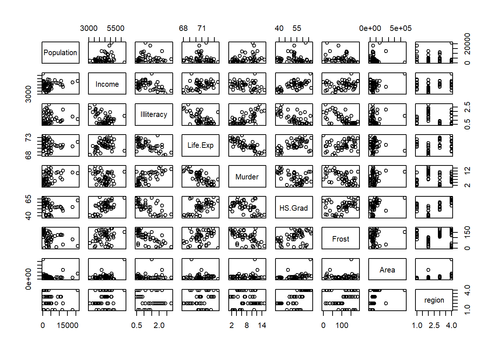
💭 Reflect: Do states with higher income tend to have lower illiteracy rates?
plot(state_data)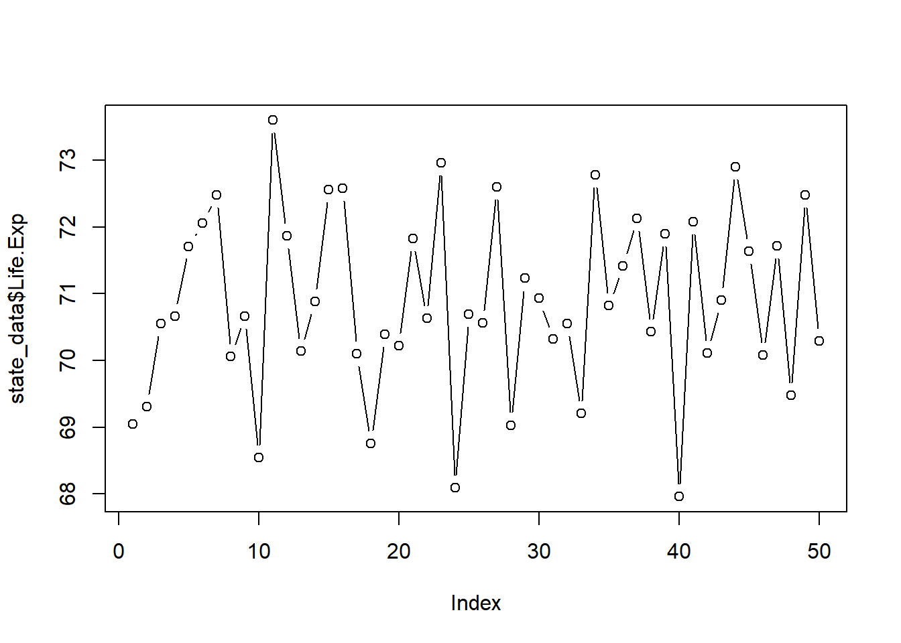
💭 Reflect: Which pairs of socio-economic indicators appear strongly related?
plot(state_data$`Life Exp`, type = "b")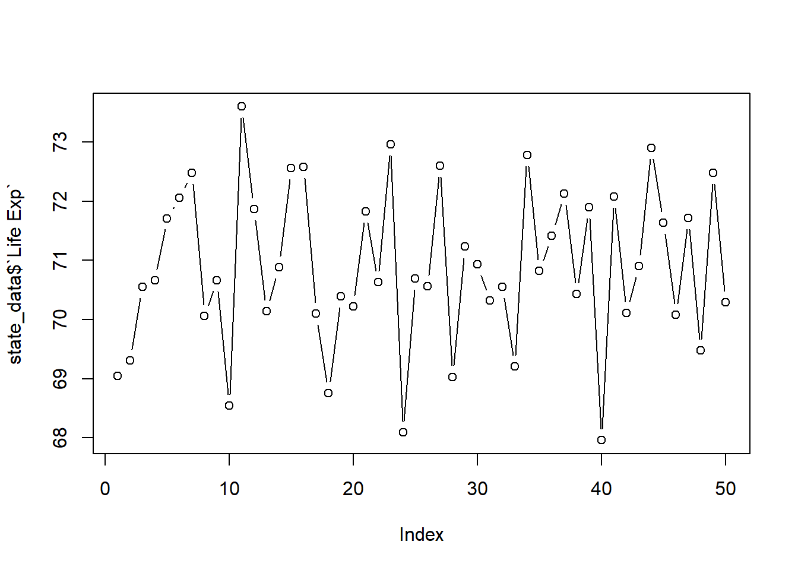
plot(state_data$`Life Exp`, type = "h")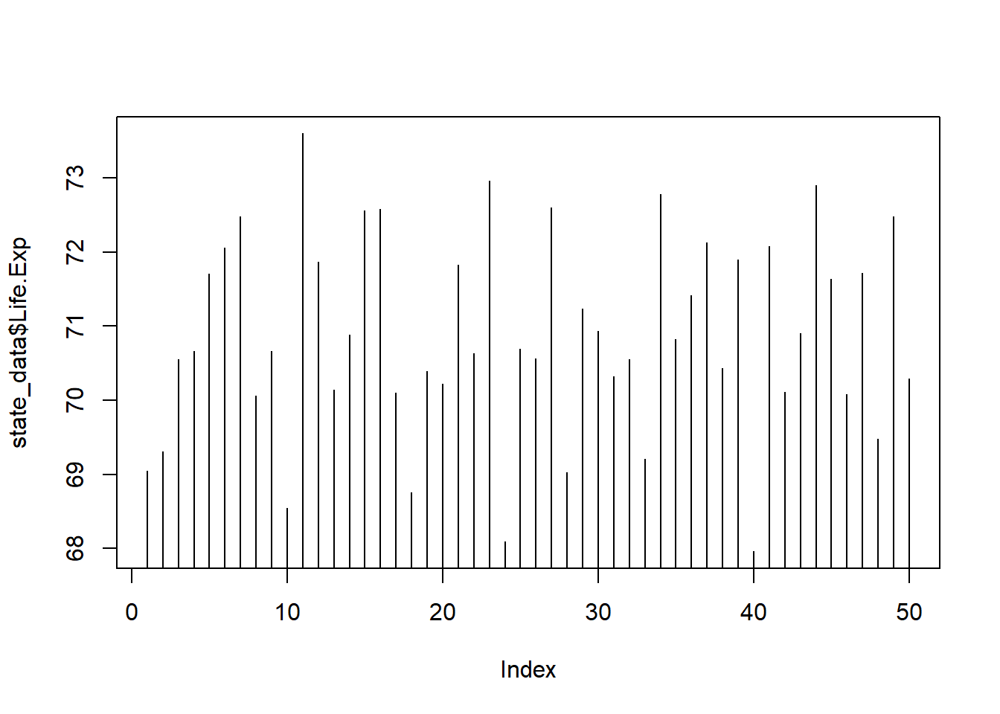
💭 Reflect: Which representation communicates variation in life expectancy more clearly?
?plotstarting httpd help server ... done💭 Reflect: Identify one new argument from the help page that could improve your plot.
plot(state_data$Income,
xlab = "State Index",
ylab = "Per Capita Income",
main = "Income levels across US states",
col = "blue")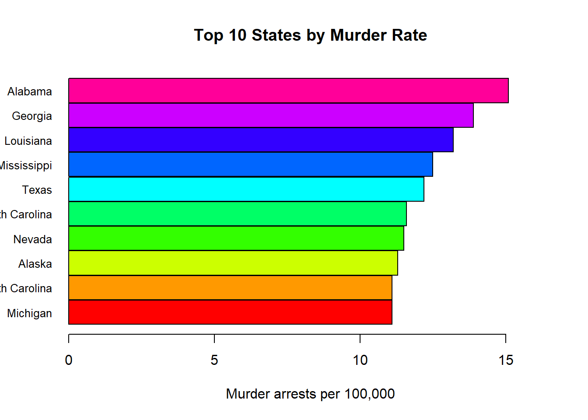
💭 Reflect: Do the labels improve clarity? Suggest improvements if needed.
barplot(state_data$Murder,
main = "Murder Rate by State",
xlab = "Murder arrests per 100,000",
col = "purple",
horiz = TRUE)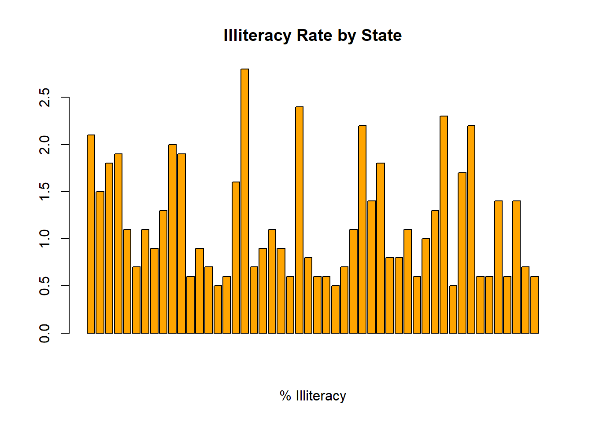
💭 Reflect: Which states stand out with particularly high murder rates?
barplot(state_data$Illiteracy,
main = "Illiteracy Rate by State",
xlab = "% Illiteracy",
col = "orange",
horiz = FALSE)💭 Reflect: How might this plot inform discussions on educational policy?
hist(state_data$Income)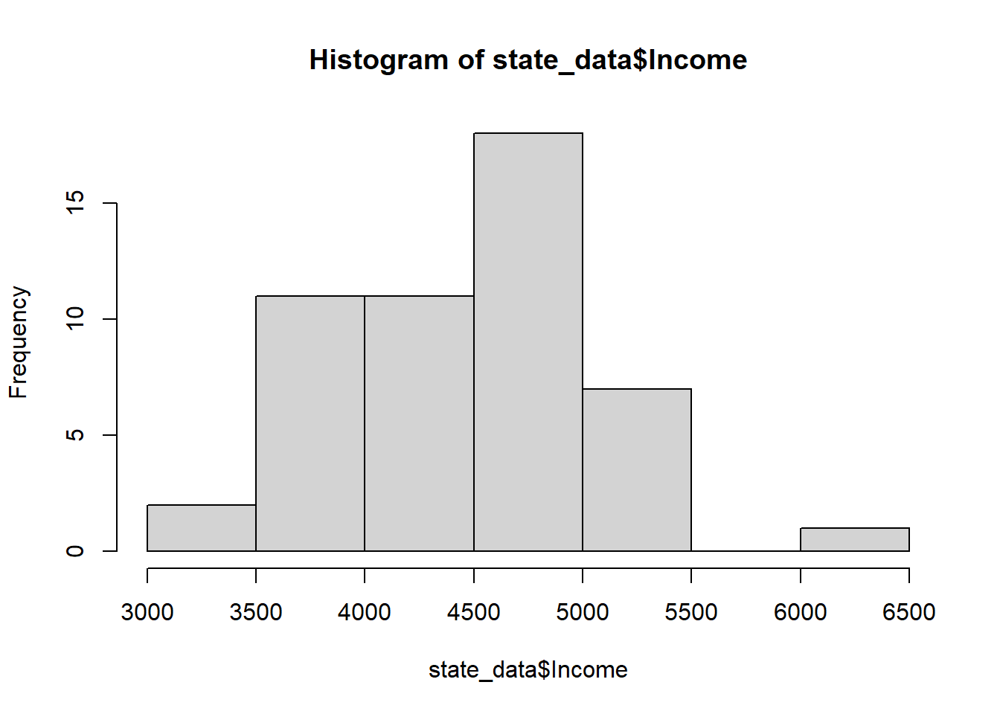
hist(state_data$Income,
main = "Distribution of State Incomes",
xlab = "Per Capita Income",
col = "green")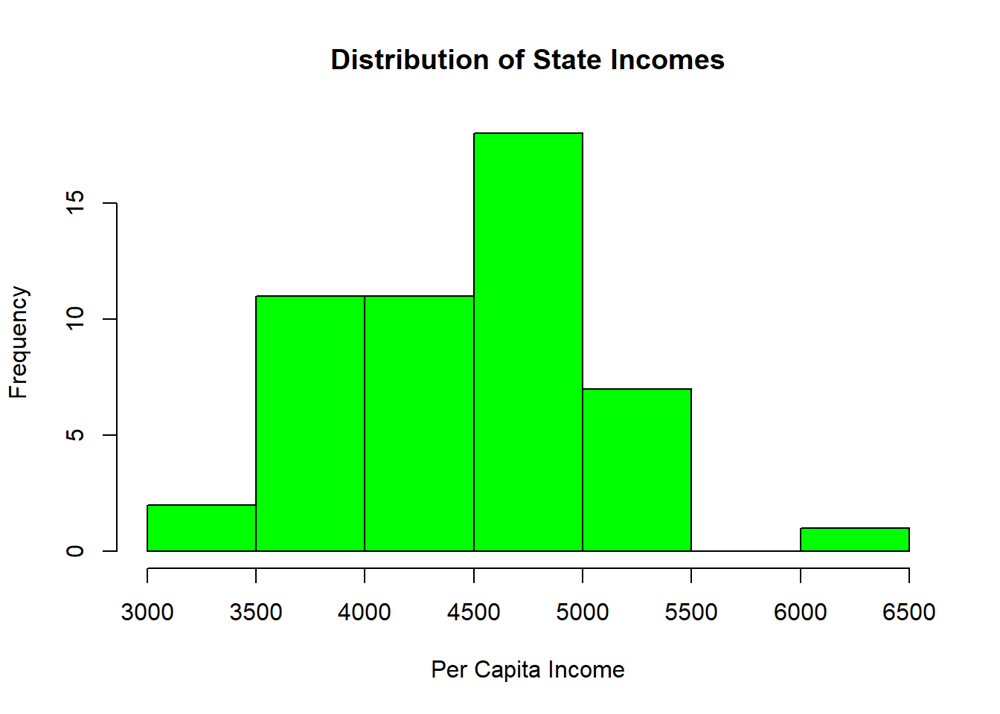
💭 Reflect: Is the income distribution symmetric, skewed, or multi-modal?
boxplot(state_data$`Life Exp`)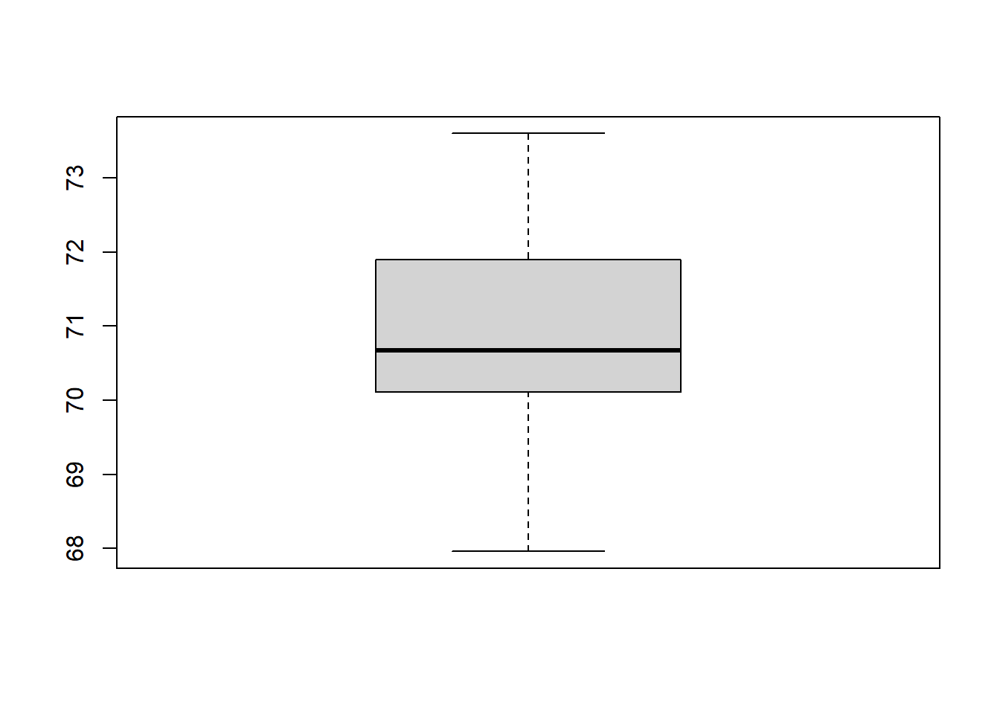
💭 Reflect: What does the boxplot reveal about state-level life expectancy?
boxplot(state_data[, c("Population", "Income", "Illiteracy", "Life Exp")],
main = "Socio-economic Indicators across States")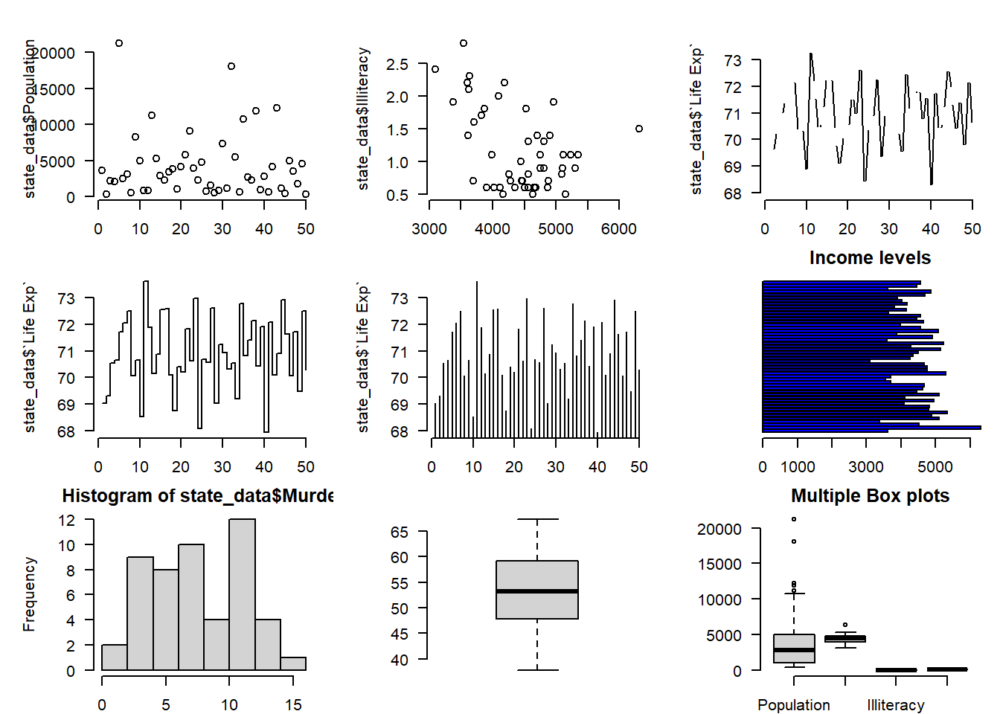
💭 Reflect: Which variable shows the most variability? The least?
par(mfrow = c(3,3), mar = c(2,5,2,1), las = 1, bty = "n")
plot(state_data$Population)
plot(state_data$Income, state_data$Illiteracy)
plot(state_data$`Life Exp`, type = "c")
plot(state_data$`Life Exp`, type = "s")
plot(state_data$`Life Exp`, type = "h")
barplot(state_data$Income, main = "Income levels", col = "blue", horiz = TRUE)
hist(state_data$Murder)
boxplot(state_data$`HS Grad`)
boxplot(state_data[, c("Population", "Income", "Illiteracy", "Life Exp")],
main = "Multiple Box plots")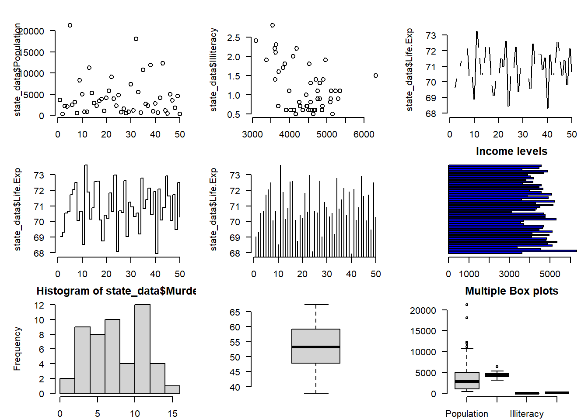
💭 Reflect: Which plots are most useful for policy discussions? Which are least useful?
More resources: towardsdatascience.com article
pch (point type) and col (colour).These are concise, indicative answers. Local results may vary slightly depending on plotting parameters and ordering.
state.x77: Population (thousands), Income (per-capita, USD), Illiteracy (% age ≥25 illiterate), Life.Exp (years), Murder (per 100,000), HS.Grad (% high-school graduates), Frost (mean days ≤ 0°C), Area (square miles).Area, Population).Area and Population (large range, right-skew).Murder and Illiteracy show noticeable skew and outliers.pairs(), boxplot(), hist(), barplot(), stripchart(), dotchart(), qqnorm()/qqline().pairs() of entire datasetIncome ↑ with HS.Grad and Life.Exp.Murder tends to be higher where Illiteracy is higher and HS.Grad is lower.Area weakly related to socio-economic outcomes (size ≠ prosperity).type="b" conveys point-to-point variability; type="h" emphasizes magnitudes from baseline."b" is generally clearer.pch (point symbol), cex (size), col (colour), xlim/ylim (ranges), main/sub (titles/subtitles).order() or use a dotchart.Population shows largest spread; Life.Exp the tightest. Outliers are more common in Murder and Illiteracy.Income vs Illiteracy), and boxplots/histograms for distributions.End of Lab 5
Learn to use GitHub Copilot inside RStudio to speed up routine coding, while staying in control of quality, privacy, and reproducibility.
By the end you will be able to: 1. Enable and sign into GitHub Copilot in RStudio. 2. Accept, reject, or modify Copilot autocomplete suggestions effectively. 3. Use comment-first prompting to steer suggestions. 4. Diagnose and fix typical Copilot mistakes (wrong column names, redundant args, etc.). 5. Apply safe-use practices (privacy, determinism, avoiding “vibe coding”).
tidyverse, palmerpenguins, readxl, ggplot2.install.packages(c("tidyverse", "palmerpenguins", "readxl", "ggplot2"))Note: Column names for the
penguinsdataset may differ depending on source. Treat this as a feature to practice Copilot-aware debugging.
File → New File → R Script).Explain in one sentence the difference between ghost text and code you’ve actually inserted.
We’ll use penguins to practice.
# Task: scatter plot of bill length (x) vs body mass (y), colour by specieslibrary(ggplot2)
# library(palmerpenguins)
# penguins <- palmerpenguins::penguins
p <- ggplot(penguins, aes(x = bill_length_mm, y = body_mass_g, colour = species)) +
geom_point()glimpse(penguins)
names(penguins)bill_length_mm → bill_len).# Add a title, caption, and nicer axis labels# Add a loess smoother without confidence bandWhen is Copilot faster? When slower?
# Histogram of body mass by species, overlapping with transparency and an accessible palettegeom_histogram(position = "identity", alpha = 0.5)Replace colour with fill, adjust legend, apply minimal theme.
Copilot does not know your file system.
Scooby.xlsx in a data/ folder.library(readxl)
scooby <- read_xlsx("data/Scooby.xlsx")# Quick EDA: glimpse, summary, and count episodes by networkWhy be explicit with data loading and library imports?
Visualise IMDb ratings by network.
# Boxplot of IMDb (y) by network (x); tilt x labels; use fill instead of colour# Make it horizontal, tidy legend, and add labsOrder networks by median rating.
renv.install.packages("renv")
renv::init()Export script or Quarto doc → submit.
names()/glimpse().End of lab 6